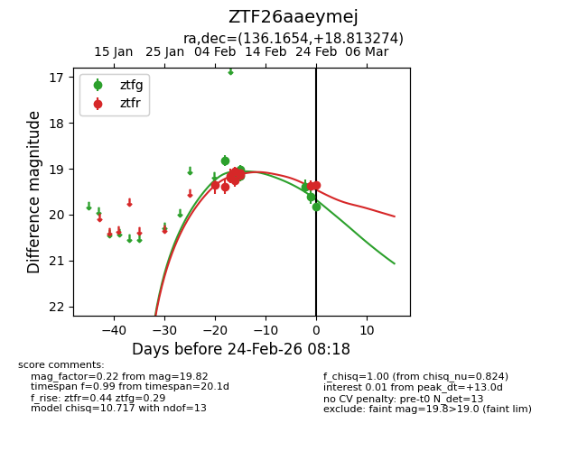
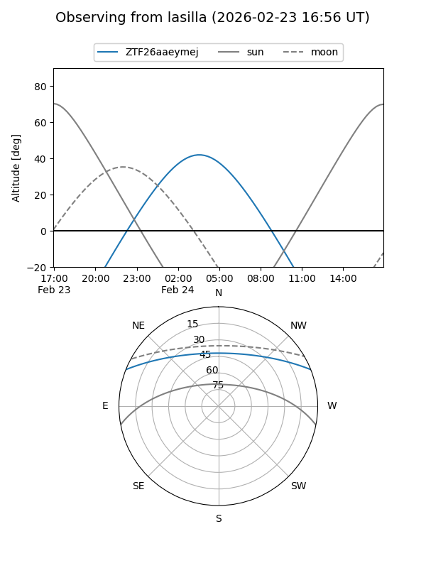
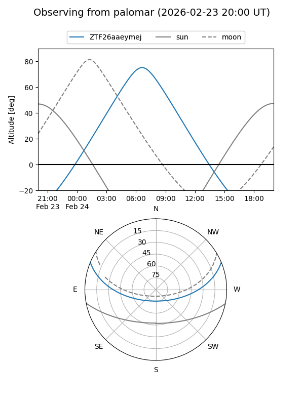

ZTF26aaeymej
Target ZTF26aaeymej at 2026-02-24 09:08
Aliases and brokers:
FINK: link
Lasair: link
ALeRCE: link
alt names
ZTF26aaeymej (ztf,fink_ztf)
Coordinates:
equatorial (ra, dec) = 136.1654,+18.81327
equatorial (HMS+DMS) = 09:04:39.70,+18:48:47.78
galactic (l, b) = (209.3155,+37.56345)
Flags:
Photometry:
last ztfg=19.82, ztfr=19.36
8 ztfg, 10 ztfr detections
Lightcurve

Visibility


Additional plots